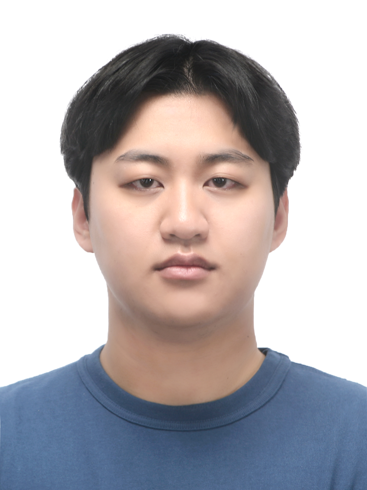

ABOUT
저는 강원대학교 컴퓨터공학과에 재학중인 20학번 학부생입니다. 어렸을 때부터 게임을 좋아했고 중학생시절 MINECRAFT라는 게임을 하게되면서 자연스럽게 JAVA와 JavaScript를 접하게 되었고 그것이 계기가 되어 지금까지도 코딩이라는 것에 재미를 느껴 진로방향성을 컴퓨터쪽으로 잡게되었습니다. 진로의 방향성을 세부적으로 아직 정하지 못했지만 현재는 여러가지를 다 경험해보고자 하는 생각을 가지고 있습니다. 현재 가장 크게 잡고있는 목표는 24년말까지 스스로 만족할만한 싱글 게임하나를 제작해보려는 계획이있습니다.